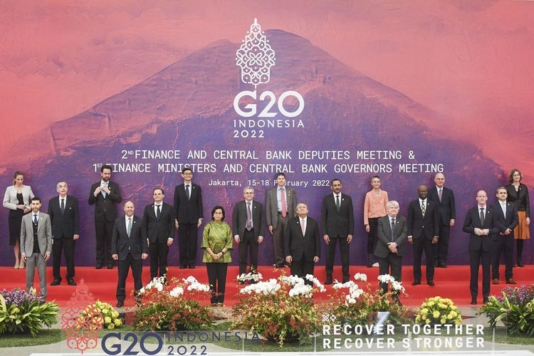

Hallo, Bonjour, Ciao, こんにちは, ä½ å¥½! 🌍💬
Selamat datang Bu Yustin, Pak Kris, Pak Agus, dan teman-teman semuanya di Web IL Kolaborasi saya.â Tak kenal
maka tak sayang, sebelumnya perkenalkan saya
Nathania/93/24👧🀠Penasaran apa isi dari web ini? ğŸ’Yuk langsung saja kita
mulai menjelajahi setiap isinya. Semoga isi dari web ini bermanfaat bagi Bapak/Ibu Guru dan teman-teman
semuanya.
Selamat Berjelajah!🔎🕵️‍♀️

Hubungan antara 2 negara untuk mencapai tujuan bersama dan menguntungkan kedua belah pihak. Contohnya, kerjasama antara Indonesia dan Jepang dalam Indonesia-Japan Economic Partnership Agreement (IJEPA) sejak 2008 hingga sekarang.

Hubungan antar negara dalam suatu kawasan geografi yang sama atau letaknya berdekatan yang melibatkan lebih dari 2 negara untuk mendukung perekonomian di kawasan regional. Contohnya, ASEAN dimana anggotanya berasal dari berbagai negara di wilayah Asia Tenggara, terakhir beberapa tahun lalu, negara Timor Leste bergabung dengan ASEAN.
